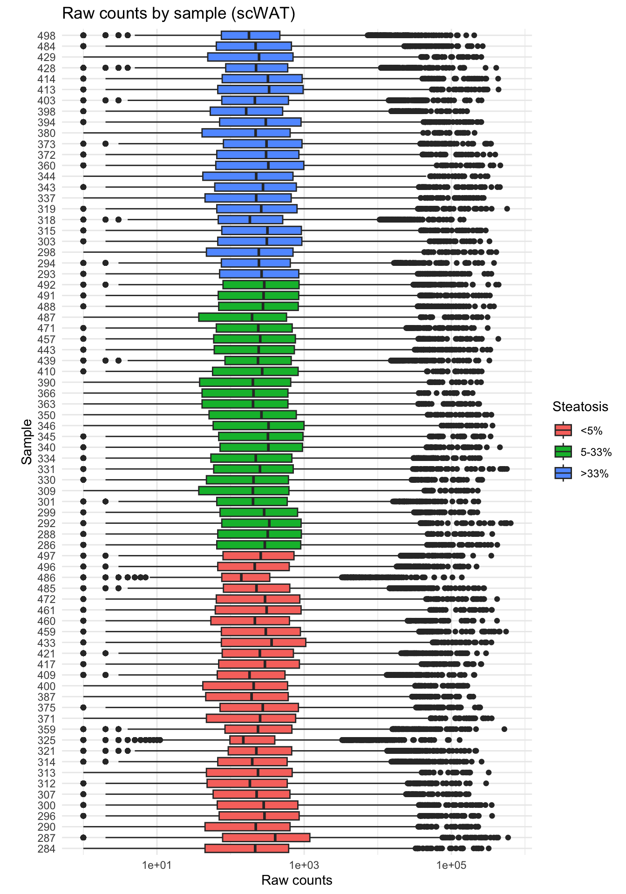

library(tidyverse)
library(DESeq2)
counts <- read.delim("data/salmon.merged.gene_counts.tsv")
# make sure expression data are integers
counts_round <- round(counts,digits = 0) |>
# filter out very low expresed genes
filter(rowSums(across(everything()))>1000)
meta_data <- read_csv("data/20240813_metadata.csv") |>
column_to_rownames("prefix") |>
mutate(steatosis_3cat=fct_recode(Steatosis,`>33%`=">33-66%",`>33%`=">66%"),
steatosis_3cat=factor(steatosis_3cat,levels=c("<5%", "5-33%", ">33%")))
# Generate dds objects with the DESeq2
## scWAT
dds_sc <- DESeqDataSetFromMatrix(countData = counts_round |> select(starts_with("SC_")),
colData = meta_data |> filter (tissue=="scWAT"),
design = ~ sexo + steatosis_3cat )2 Bulk RNAseq
2.1 Introduction
Recent advancements in omics technologies, along with the decreasing costs of next-generation sequencing (NGS) facilitated by outsourcing to specialized companies like Novogene and BGI, have significantly transformed the landscape of high-throughput data generation and analysis. As these technologies progress, the substantial volume of data produced daily demands sophisticated and customizable analytical methods. Among the various available analysis tools, two primary categories emerge: graphical user interface (GUI) tools and command line interface (CLI) tools, each offering distinct benefits and further classifications based on their operational environments and programming languages.
GUI tools are particularly user-friendly, making them accessible to researchers without advanced programming skills while still providing robust capabilities for omics data analysis. These tools can be web-based or local applications. Web-based applications, such as Galaxy or Partek Flow, offer the advantage of frequent updates, granting access to the latest database versions. However, they may lack the stability of local applications, which are typically more reliable for reproducible results.
On the other hand, CLI tools, which require bioinformatics expertise, offer greater flexibility and powerful features essential for customizing and automating complex analyses. Programs written in languages such as Bash, R, Python, Perl, and Groovy facilitate efficient high-throughput data processing, especially in parallel computing environments. The open-source nature of R and Python, along with their extensive libraries and packages, has led to their widespread adoption in the bioinformatics field.
Additionally, specialized tools for pipeline development, including Nextflow, Snakemake, WDL, and Cromwell, have significantly improved the scalability and reproducibility of bioinformatics workflows. Nextflow is particularly noteworthy for its ability to adapt pipelines written in various scripting languages and its active user community that maintains and shares curated nf-core pipelines.
In RNA sequencing (RNAseq) data analysis, a typical pipeline involves multiple stages: upstream data processing, quality control, visualization of count matrices, and downstream functional analysis. Different tools excel at various stages, and integrating these tools can provide a more comprehensive and customized analytical approach. This project utilizes the strengths of Nextflow’s nf-core rnaseq pipeline and the versatility of R and its packages to develop a robust and flexible pipeline for RNA-seq data analysis.
https://www.biorxiv.org/content/10.1101/2023.10.15.562329v3.full
2.2 Experimental design
2.2.1 RNA preparation
2.2.1.1 RNA isolation and extraction
Total RNA was isolated from frozen biopsies of scWAT and liver by homogenizing the tissues with 1 ml/sample of TRIzol (#T9424, Sigma Aldrich) according to the manufacturer’s protocol. Homogenates were transferred to a vial and incubated 5 min at r. t. to dissociate nuclear components. Then, 0.2 ml of 100% chloroform/ml of TRIzol was added, vigorously shaken, incubated for 15 min at r. t., and centrifuged for 15 min at 12000 g and 4 ºC.
After centrifugation, three phases were generated. The aqueous phase containing the ribonucleic acids was isolated and 0.5 ml of 100 % isopropanol were added to precipitate the RNA. It was mixed, incubated for 10 min on ice and then centrifuged at 12000 g for 15 min at 4 ºC. Subsequently, supernatant was removed by decanting and the nucleotide pellet was resuspended in 1 ml of 75% ethanol for washing. The pellet was homogenized and centrifuged at 7500 g for 5 min and 4 ºC. The supernatant was then removed and the pellet was dried for 5 minutes at r. t. Finally, the RNA was resuspended in DEPC water. To remove genomic DNA residues, all the RNA samples were treated with RNase-Free DNase (Life Technologies). The concentration and purity of the RNA were determined by measuring absorbance at 260/280 nm and 260/230 nm using a Nanodrop 2000 (Thermo Fisher).
2.2.1.2 RNA quality assessment
RNA integrity was calculated using the RNA integrity number (RIN). The RIN was evaluated through the Agilent 2200 TapeStation with its RNA ScreenTape assay following the manufacturer’s protocol. For liver tissue samples, the average RIN per sample (mean ± sd) was 6.8 ± 1.0, ranging from a minimum of 4.8 to a maximum of 8.9. In contrast, scWAT samples exhibited superior RNA integrity with an average RIN of 8.1 ± 0.6, ranging from 6.3 to 9.0. The higher RIN values observed in SCWAT suggest better preservation of RNA, likely due to less enzymatic activity that degrades RNA.
2.2.2 Stranded mRNA library construction, quality control and sequencing
The preparation of RNA libraries and sequencing was performed at the Novogene Cambridge Science Park (Cambridge, United Kingdom). Libraries were prepared using the Novogene NGS RNA Library Prep Set (PT042). Briefly, mRNA obtained with poly-T oligo-attached magnetic beads was fragmented and the first strand cDNA was synthesized using random hexamer primers. Then, the second strand cDNA was synthesized using dUTP, instead of dTTP. The directional library was ready after end repair, A-tailing, adapter ligation, enzyme digestion to remove UTP-containing second strand cDNA, size selection, PCR amplification, and purification.
Libraries were checked with Qubit and real-time PCR for quantification and bioanalyzer for size distribution detection. Quantified libraries were pooled and sequenced (2 x 150 bp) on Novaseq X Plus (Illumina), according to effective library concentration and data amount.
2.2.3 mRNAseq mapping and quantification workflow
We used the nf-core/rnaseq pipeline with Nextflow (version 23.10.1) to process RNA sequencing data (compressed fastq files). The analysis was containerized using Docker to ensure reproducibility. Input data, including sample metadata, was provided via a CSV file, and the workflow was performed on the Core Cluster of the Instituto Aragonés de Ciencias de la Salud. We employed the STAR aligner with Salmon for quantification, using the GRCh38.p13 reference genome and Gencode v40 gene annotations. The pipeline was configured to skip marking duplicate reads and using custom genome references rather than default settings. The workflow was based on the nf-core repository at https://github.com/nf-core/rnaseq.
2.3 Data analysis
2.3.1 Quality control and reads preprocessing
In our study, the initial analysis of raw sequencing data from RNAseq experiments involving liver and subcutaneous adipose tissue (scWAT) showed similar average (mean ± sd) outputs before trimming, with liver samples yielding 50.4 ± 10 million reads per sample (forward + reverse) and scWAT 52.1 ± 11 million reads. The variability in sequencing depth between samples was evidenced by ranges extending from 31.0 to 85.3 million reads per sample for liver, and 20.3 to 83.0 million reads for scWAT. (Multiqc report)
Post-sequencing data processing with Cutadapt revealed a mean trimming percentage of 1.02 ± 0.19% for liver samples and 1.41 ± 0.44% for SCWAT, suggesting a higher incidence of adapter contamination or low-quality bases in SCWAT samples.
Mapping efficiencies, assessed using STAR, demonstrated robust alignment with an average of 89.6 ± 2.9% of sequences uniquely mapping to the reference genome (GRCh38) for liver samples, and a similar mapping performance 90.2 ± 1.64% for scWAT. Reads mapping to multiple loci were also similar between tissues, with 8.18 ± 1.59% for liver and 8.45 ± 1.46% for scWAT.
2.3.2 Quality control with R
(Fig Figure 2.1)
# Plot to visualize the read counts (scWAT)
counts_sc <- dds_sc@assays@data$counts |>
as.data.frame() |>
rownames_to_column("gene") |>
pivot_longer(-"gene", names_to = "sample", values_to = "counts") |>
inner_join(meta_data |> rownames_to_column("prefix"), by=c("sample"="prefix")) |>
mutate(sample.y=as.character(sample.y))
ggplot(counts_sc,aes(x=reorder(sample.y,as.numeric(steatosis_3cat)),
y= counts,
fill=steatosis_3cat))+
geom_boxplot(na.rm = T)+
scale_y_log10()+
labs(x="\nSample", y="Raw counts", title = "Raw counts by sample (scWAT)")+
coord_flip()+
scale_fill_discrete("Steatosis")+
theme_minimal()+
theme()
